The resources available for conservation are limited. To ensure that conservation resources are allocated cost-effectively, conservation plans (termed prioritizations) can be developed – using a combination of economic, biodiversity, and land-use data – to prioritize a set of sites for conservation management (e.g. protected area establishment). However, existing data on biodiversity patterns is incomplete. As a consequence, spatial prioritizations can potentially be improved by collecting additional data (e.g. surveying sites to refine estimates of which species are present inside them). However, this is complicated by the fact that surveying sites consumes limited resources that also need to be used for conservation management. Thus decision makers need to strategically prioritize sites for surveys that will substantially improve spatial prioritisations—this is not a trivial task.
The surveyvoi package is decision support tool for prioritizing sites for surveys based on their potential to improve spatial prioritizations for managing biodiversity. Given a set of sites that could potentially be acquired for conservation management – wherein some sites have previously been surveyed and other sites have not – this package aims to identify which sites should be surveyed because doing so could lead to vastly superior conservation management plans (i.e. the management decision). Methods are provided to calculate the expected value of the decision given current information, and the expected value of the decision given a survey scheme (using exact methods for small problems, and approximation methods for large problems). Furthermore, by examining survey schemes, optimal survey schemes can be identified. In this vignette, we will use a simulated dataset to explore these methods.
Let’s start by setting up our R session. Here we will load some R packages and pre-set the random number generators for reproducibility.
# load packages library(tidyr) library(dplyr) library(surveyvoi) library(ggplot2) library(gridExtra) library(viridis) library(tibble) library(RandomFields) # set RNG seeds for reproducibility seed <- 715 set.seed(seed) RFoptions(seed = seed) # set default table printing options options(pillar.sigfig = 6)
Let’s simulate some data. To keep things simple, we will simulate data for 30 sites and one conservation feature (e.g. species). Of the 30 sites in total, we will simulate survey data for 18 sites—meaning that 12 of the sites will not have survey data. We will also simulate two spatially auto-correlated variables to characterise the environmental conditions within the sites. Although the simulation code (i.e. simulate_site_data) can output the probability that features are expected to inhabit the sites, we will disable this option to make our simulation study more realistic and instead predict these probabilities using statistical models.
# simulate site data site_data <- simulate_site_data( n_sites = 30, n_features = 1, proportion_of_sites_missing_data = 12 / 30, n_env_vars = 3, max_number_surveys_per_site = 1, output_probabilities = FALSE)
## ...# print site data print(site_data)
## Simple feature collection with 30 features and 7 fields
## geometry type: POINT
## dimension: XY
## bbox: xmin: 0.04928101 ymin: 0.02242576 xmax: 0.9836789 ymax: 0.9957509
## CRS: NA
## # A tibble: 30 x 8
## survey_cost management_cost f1 n1 e1 e2 e3
## <dbl> <dbl> <dbl> <dbl> <dbl> <dbl> <dbl>
## 1 5.37503 71.4770 1 1 -1.16175 -0.820554 0.444516
## 2 4.40311 63.7324 0 0 1.05826 -1.28770 0.139157
## 3 7.83981 73.0621 1 1 -0.736609 0.733109 1.03653
## 4 11.4662 66.1679 0 0 1.77391 1.20038 -2.27371
## 5 5.50316 67.9276 0 0 -1.67395 -0.408138 0.376850
## 6 8.67965 74.8280 0 1 -0.905815 0.978526 0.759205
## 7 7.24226 69.5557 1 1 0.384206 -0.158379 0.515493
## 8 11.7712 68.0428 0 1 0.728228 0.671176 -0.964622
## 9 10.5117 64.9664 0 0 1.29645 0.0114602 -0.746961
## 10 6.05228 72.7030 1 1 -1.13688 0.919918 1.70807
## # … with 20 more rows, and 1 more variable: geometry <POINT>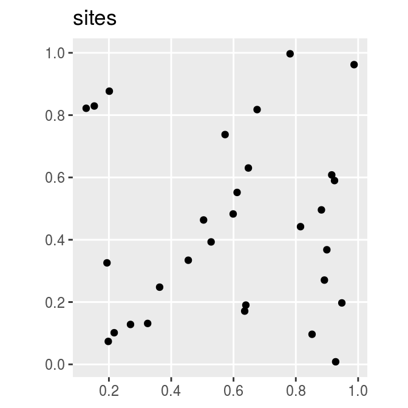
The site_data object is a spatially explicit dataset (i.e. sf object) that contains information on the site locations and additional information for each site too. Here, each row corresponds to a different site and each column contains different information about the sites. The f1 column contains the results from previous surveys, where values describe the proportion of previous surveys where species were previously detected at each site. Since each site only has a single previous survey at most, these data contain zeros (indicating that the species has not been detected) and ones (indicating that the species has been detected). The n1 column contains the number of previous surveys conducted within each site. Thus sites with zeros in this column have not previously been surveyed. The e1, e2, and e3 columns contain environmental information for each site (e.g. normalized temperature and rainfall data). The survey_cost column contains the cost for surveying each site, and the management_cost column contains the cost for managing each site for conservation.
To help understand the simulated data, let’s create some visualizations.
# plot site occupancy data from previous surveys site_data %>% mutate(f1 = as.character(f1)) %>% ggplot() + geom_sf(aes(color = f1)) + scale_color_manual(values = c("1" = "red", "0" = "black")) + labs(title = "detection/non-detection data")
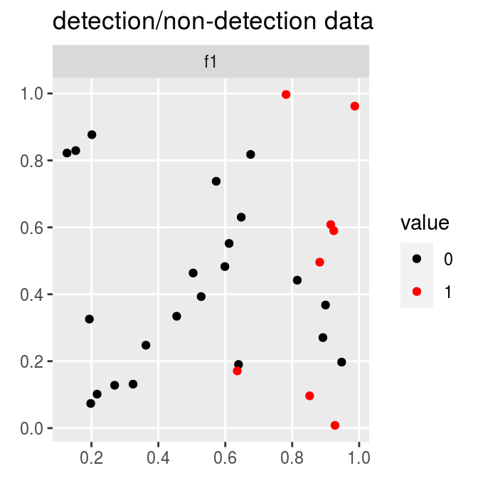
# plot number of previous surveys within each site site_data %>% mutate(n1 = as.character(n1)) %>% ggplot() + geom_sf(aes(color = n1)) + scale_color_manual(values = c("1" = "blue", "0" = "black")) + labs(title = "number of previous surveys data")
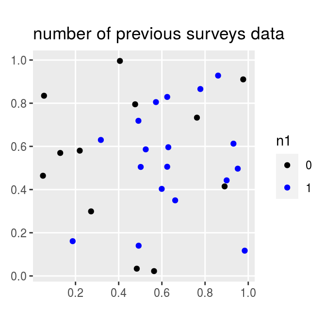
# plot site cost data # note that survey and management costs are on different scales p1 <- ggplot(site_data) + geom_sf(aes(color = survey_cost)) + scale_color_viridis() + labs(title = "survey cost") + theme(legend.title = element_blank()) p2 <- ggplot(site_data) + geom_sf(aes(color = management_cost)) + scale_color_viridis() + labs(title = "management cost") + theme(legend.title = element_blank()) grid.arrange(p1, p2, nrow = 1)
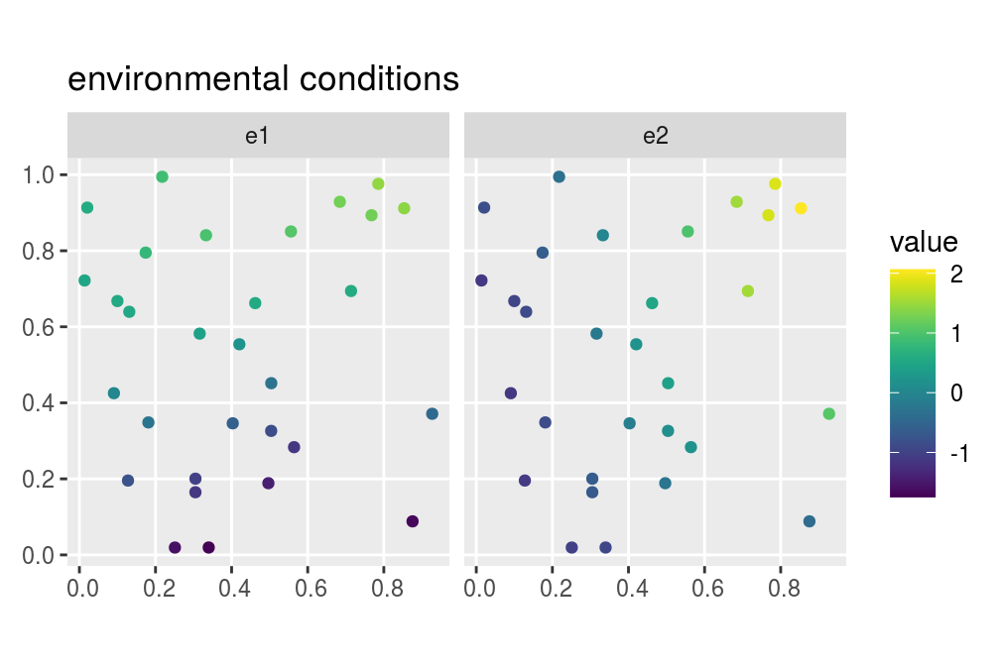
# plot site environmental data site_data %>% select(starts_with("e")) %>% gather(var, value, -geometry) %>% ggplot() + geom_sf(aes(color = value)) + facet_wrap(~ var) + scale_color_viridis() + labs(title = "environmental conditions")
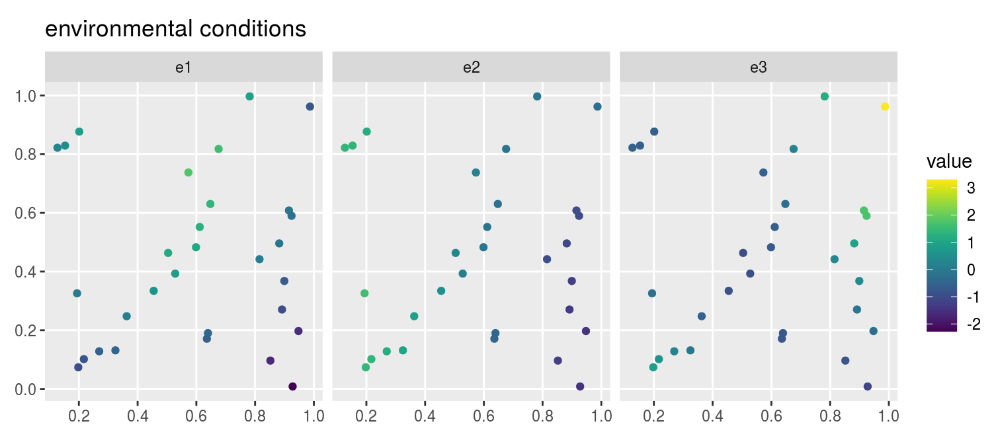
After simulating data for the sites, we will simulate data for the conservation feature.
# simulate feature data feature_data <- simulate_feature_data( n_features = 1, proportion_of_survey_features = 1) # manually set target feature_data$target <- 15 # print feature data print(feature_data)
## # A tibble: 1 x 7
## name survey survey_sensitiv… survey_specific… model_sensitivi…
## <chr> <lgl> <dbl> <dbl> <dbl>
## 1 f1 TRUE 0.965532 0.861344 0.776341
## # … with 2 more variables: model_specificity <dbl>, target <dbl>The feature_data object is a table (i.e. tibble object) that contains information on the conservation feature. Here, each row corresponds to a different feature – and so it only has one row because we only have one feature – and each column contains different information about the feature(s). The name column contains the name of the feature. The survey column indicates if the feature will be examined in future surveys. The target column specifies the amount of occupied sites for each species that should ideally be represented by the prioritization. Finally, the sensitivity and specificity columns denote the sensitivity (probability of correctly detecting a presence) and specificity (probability of correctly detecting an absence) of the survey methodology.
After simulating the data, we need to estimate the probability of the feature occurring in the unsurveyed sites. This is important for calculating the return on investment of surveying sites, because if we can reliably predict the probability of the feature(s) occurring in unsurveyed sites using models then we may not need to survey them. Specifically, we will fit gradient boosted regression trees – via the xgboost R package – using functions contained in this package. These models are well-suited for modelling species distributions because they can accommodate high order interactions among different predictor variables that are needed to effectively model species’ environmental niches.
# create list of candidate parameter value for calibration procedure xgb_parameters <- list(eta = 0.1, lambda = 0.1, objective = "binary:logistic") # identify suitable parameters for model fitting # ideally, we would try a larger range of values, # but we will keep it low to reduce processing time for this example xgb_results <- fit_xgb_occupancy_models( site_data, feature_data, "f1", "n1", c("e1", "e2", "e3"), "survey_sensitivity", "survey_specificity", n_folds = 2, xgb_tuning_parameters = xgb_parameters)
After fitting the models, we can examine the tuning parameters used to fit the models, extract the modelled probability of occupancy, and evaluate the performance of the models.
# print best parameters print(xgb_results$parameters)
## [[1]]
## [[1]]$eta
## [1] 0.1
##
## [[1]]$lambda
## [1] 0.1
##
## [[1]]$objective
## [1] "binary:logistic"
##
## [[1]]$scale_pos_weight
## [[1]]$scale_pos_weight[[1]]
## [1] 1 1# print model performance (TSS value) xgb_performance <- xgb_results$performance print(data.frame(xgb_performance))
## feature train_tss_mean train_tss_std train_sensitivity_mean
## 1 f1 1 0 1
## train_sensitivity_std train_specificity_mean train_specificity_std
## 1 0 1 0
## test_tss_mean test_tss_std test_sensitivity_mean test_sensitivity_std
## 1 0.8788582 0.1713204 1 0
## test_specificity_mean test_specificity_std
## 1 0.8788582 0.1713204# store the model sensitivities and specificities in the feature_data object feature_data$model_sensitivity <- xgb_performance$test_sensitivity_mean feature_data$model_specificity <- xgb_performance$test_specificity_mean # store predicted probabilities values in the site_data object xgb_predictions <- xgb_results$predictions print(xgb_predictions)
## # A tibble: 30 x 1
## f1
## <dbl>
## 1 0.688959
## 2 0.617087
## 3 0.603602
## 4 0.339257
## 5 0.647904
## 6 0.380529
## 7 0.647904
## 8 0.268054
## 9 0.506680
## 10 0.688901
## # … with 20 more rowssite_data$p1 <- xgb_predictions$f1 # plot site estimated occupancy probabilities ggplot(site_data) + geom_sf(aes(color = p1)) + scale_color_viridis() + labs(title = "modelled probabilities")
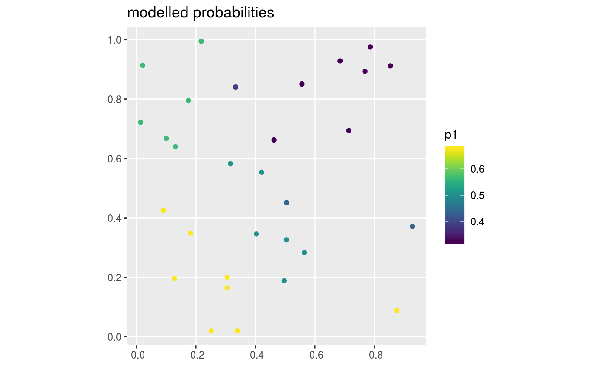
After simulating and modelling the data, we will now examine the expected value of the decision given current information. This value represents the conservation value of the optimal spatial prioritization given current information, whilst accounting for uncertainty in the presence (and absence) of the conservation feature in each site. Specifically, “current information” refers to our existing survey data and our occupancy models. Next, we will set a total budget (i.e. total_budget). This total budget represents the total amount of resources available for surveying sites and managing them for conservation. It will be set as 80% of the total site management costs.
# calculate total budget for surveying and managing sites total_budget <- sum(site_data$management_cost) * 0.8 # print total budget print(total_budget)
## [1] 1651.593Given the total budget, we can now calculate the expected value of the decision given current information.
# expected value of the decision given current information evd_current <- evdci( site_data = site_data, feature_data = feature_data, site_detection_columns = "f1", site_n_surveys_columns = "n1", site_probability_columns = "p1", site_management_cost_column = "management_cost", feature_survey_sensitivity_column = "survey_sensitivity", feature_survey_specificity_column = "survey_specificity", feature_model_sensitivity_column = "model_sensitivity", feature_model_specificity_column = "model_specificity", feature_target_column = "target", total_budget = total_budget) # print value print(evd_current)
## [1] 0.7236256We can potentially improve the expected value of the decision given current information by learning more about which sites are more likely (and less likely) to contain the conservation feature.
Now we will generate some candidate survey schemes to see if we can improve the management decision. To achieve this, we will set a budget for surveying additional sites. Specifically, this survey budget (i.e. survey_budget) will be set as 40% of the survey costs for the unsurveyed sites. Note that our total budget must always be greater than or equal to the survey budget.
# calculate budget for surveying sites # add column to site_data indicating if the sites already have data or not site_data$surveyed <- site_data$n1 > 0.5 # add column to site_data containing the additional survey costs, # i.e. sites that already have data have a zero cost, and # sites that are missing data retain their cost values site_data <- site_data %>% mutate(new_survey_cost = if_else(surveyed, 0, survey_cost)) # calculate total cost of surveying remaining unsurveyed sites total_cost_of_surveying_remaining_sites <- sum(site_data$new_survey_cost) # calculate budget for surveying sites survey_budget <- total_cost_of_surveying_remaining_sites * 0.4 # print budgets print(survey_budget)
## [1] 34.13683print(total_budget)
## [1] 1651.593We will generate survey schemes by selecting unsurveyed sites that (i) increase geographic coverage among surveyed sites, (ii) increase coverage of environmental conditions among surveyed sites (i.e. environmental diversity; Faith & Walker 1996), (iii) select unsurveyed site with highly uncertain modelled predictions (i.e. modelled probabilities close to 0.5), (iv) increase coverage of sites that have low management costs, and (v) increase coverage of sites with high modelled probabilities of occupancy (i.e. predicted site richness).
# (i) generate survey scheme to increase geographic coverage geo_scheme <- geo_cov_survey_scheme( site_data, "new_survey_cost", survey_budget, locked_out = "surveyed") # (ii) generate survey scheme to increase environmental diversity, # environmental distances are calculated using Euclidean distances here, # though we might consider something like Mahalanobis distances for a # real dataset to account for correlations among environmental variables) env_scheme <- env_div_survey_scheme( site_data, "new_survey_cost", survey_budget, c("e1", "e2", "e3"), locked_out = "surveyed", method = "euclidean") # (iii) generate survey scheme using site uncertainty scores # calculate site uncertainty scores site_data$uncertainty_score <- relative_site_uncertainty_scores(site_data, "p1") # generate survey scheme unc_scheme <- weighted_survey_scheme( site_data, "new_survey_cost", survey_budget, "uncertainty_score", locked_out = "surveyed") # (iv) generate survey scheme using site management cheapness # (i.e. inverse management cost) site_data$inv_management_cost <- 1 / site_data$management_cost cheap_scheme <- weighted_survey_scheme( site_data, "new_survey_cost", survey_budget, "inv_management_cost", locked_out = "surveyed") # (v) generate survey scheme using site richness scores # calculate site richness scores site_data$richness_score <- relative_site_richness_scores(site_data, "p1") # generate survey scheme rich_scheme <- weighted_survey_scheme( site_data, "new_survey_cost", survey_budget, "richness_score", locked_out = "surveyed")
Let’s visualize the different survey schemes.
# add schemes to site_data site_data$geo_scheme <- c(geo_scheme) site_data$env_scheme <- c(env_scheme) site_data$unc_scheme <- c(unc_scheme) site_data$cheap_scheme <- c(cheap_scheme) site_data$rich_scheme <- c(rich_scheme) # plot the schemes site_data %>% select(contains("scheme")) %>% gather(name, value, -geometry) %>% mutate_if(is.logical, as.character) %>% mutate(name = factor(name, levels = unique(name))) %>% ggplot() + geom_sf(aes(color = value)) + facet_wrap(~ name, nrow = 2) + scale_color_manual(values = c("TRUE" = "red", "FALSE" = "black"))
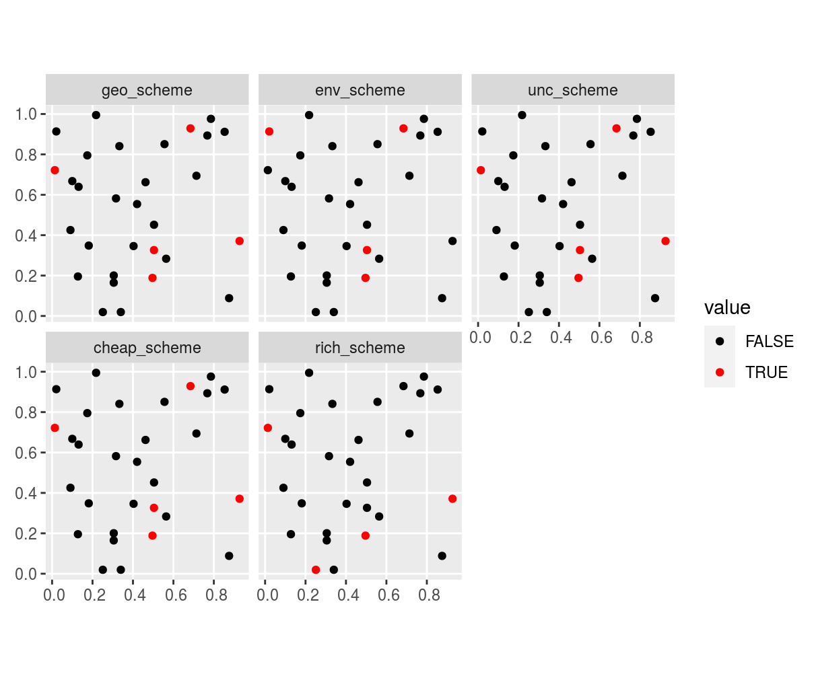
We can see that different approaches yield different survey schemes – but which survey scheme is the best?
Now that we’ve generated the survey schemes, let’s calculate the expected value of the decision of each survey scheme.
# create table to store results evd_survey_schemes <- tibble(name = c("geo_scheme", "env_scheme", "unc_scheme", "cheap_scheme", "rich_scheme")) # expected value of the decision given each survey scheme evd_survey_schemes$value <- sapply( evd_survey_schemes$name, function(x) { evdsi( site_data = site_data, feature_data = feature_data, site_detection_columns = "f1", site_n_surveys_columns = "n1", site_probability_columns = "p1", site_survey_scheme_column = as.character(x), site_management_cost_column = "management_cost", site_survey_cost_column = "survey_cost", feature_survey_column = "survey", feature_survey_sensitivity_column = "survey_sensitivity", feature_survey_specificity_column = "survey_specificity", feature_model_sensitivity_column = "model_sensitivity", feature_model_specificity_column = "model_specificity", feature_target_column = "target", total_budget = total_budget) }) # print values print(evd_survey_schemes)
## # A tibble: 5 x 2
## name value
## <chr> <dbl>
## 1 geo_scheme 0.723626
## 2 env_scheme 0.723626
## 3 unc_scheme 0.723626
## 4 cheap_scheme 0.723626
## 5 rich_scheme 0.723626We can also calculate how much the information gained from each of the survey schemes is expected to improve the management decision. This quantity is called the return on investment for each survey scheme.
# estimate the return on investment for each survey scheme evd_survey_schemes$roi <- evd_survey_schemes$value - evd_current # print values print(evd_survey_schemes)
## # A tibble: 5 x 3
## name value roi
## <chr> <dbl> <dbl>
## 1 geo_scheme 0.723626 -5.46341e-12
## 2 env_scheme 0.723626 -1.96900e-11
## 3 unc_scheme 0.723626 -1.96897e-11
## 4 cheap_scheme 0.723626 -1.96897e-11
## 5 rich_scheme 0.723626 -1.96897e-11# visualize the return on investment for each survey scheme # color the best survey scheme in blue evd_survey_schemes %>% mutate(name = factor(name, levels = name), is_best = roi == max(roi)) %>% ggplot(aes(x = name, y = roi)) + geom_col(aes(fill = is_best, color = is_best)) + xlab("Survey scheme") + ylab("Return on investment") + scale_color_manual(values = c("TRUE" = "#3366FF", "FALSE" = "black")) + scale_fill_manual(values = c("TRUE" = "#3366FF", "FALSE" = "black")) + theme(axis.text.x = element_text(angle = 30, vjust = 0.65), legend.position = "none")
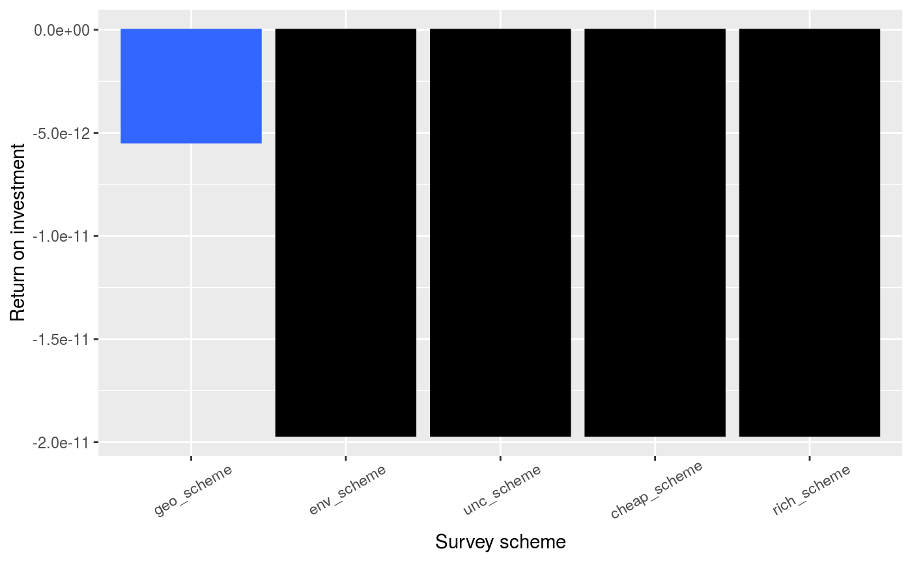
In this particular simulation, we can see that all of the survey schemes have a very low return on investment (i.e. most values are very close to zero). This means that none of these survey schemes would likely lead to a substantially better conservation outcome when considering the funds spent conducting them. So, we would not choose to implement any of these surveys schemes. But what is the best possible – the optimal – survey scheme?
Now let’s identify the optimal survey scheme by directly maximizing the expected value of the decision given a survey scheme.
# identify optimal survey scheme(s) opt_scheme <- optimal_survey_scheme( site_data = site_data, feature_data = feature_data, site_detection_columns = "f1", site_n_surveys_columns = "n1", site_probability_columns = "p1", site_management_cost_column = "management_cost", site_survey_cost_column = "survey_cost", feature_survey_column = "survey", feature_survey_sensitivity_column = "survey_sensitivity", feature_survey_specificity_column = "survey_specificity", feature_model_sensitivity_column = "model_sensitivity", feature_model_specificity_column = "model_specificity", feature_target_column = "target", total_budget = total_budget, survey_budget = total_budget, verbose = TRUE)
## [1] 8# add optimal scheme to site data site_data$opt_scheme <- c(opt_scheme[1, ]) # plot optimal scheme site_data %>% mutate(name = "opt_scheme") %>% ggplot() + geom_sf(aes(color = opt_scheme)) + facet_wrap(~ name, nrow = 1) + scale_color_manual(values = c("TRUE" = "red", "FALSE" = "black"))
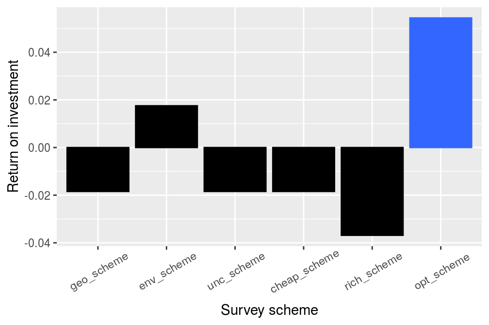
We can see that the optimal survey scheme (opt_scheme) is different to the previous survey schemes. In particular, the optimal scheme selects fewer sites than the other survey schemes. This result shows that survey schemes need to ensure adequate funds remain for actually achieving conservation objectives.
# calculate return on investment of the optimal scheme evd_opt <- evdsi( site_data = site_data, feature_data = feature_data, site_detection_columns = "f1", site_n_surveys_columns = "n1", site_probability_columns = "p1", site_survey_scheme_column = "opt_scheme", site_management_cost_column = "management_cost", site_survey_cost_column = "survey_cost", feature_survey_column = "survey", feature_survey_sensitivity_column = "survey_sensitivity", feature_survey_specificity_column = "survey_specificity", feature_model_sensitivity_column = "model_sensitivity", feature_model_specificity_column = "model_specificity", feature_target_column = "target", total_budget = total_budget) # calculate value print(evd_opt)
## [1] 0.7236256# append optimal results to results table evd_survey_schemes <- rbind( evd_survey_schemes, tibble(name = "opt_scheme", value = evd_opt, roi = evd_opt - evd_current)) # print updated results table print(evd_survey_schemes)
## # A tibble: 6 x 3
## name value roi
## <chr> <dbl> <dbl>
## 1 geo_scheme 0.723626 -5.46341e-12
## 2 env_scheme 0.723626 -1.96900e-11
## 3 unc_scheme 0.723626 -1.96897e-11
## 4 cheap_scheme 0.723626 -1.96897e-11
## 5 rich_scheme 0.723626 -1.96897e-11
## 6 opt_scheme 0.723626 2.84532e-11# visualize return on investment values # color the best survey scheme in blue evd_survey_schemes %>% mutate(name = factor(name, levels = name), is_best = roi == max(roi)) %>% ggplot(aes(x = name, y = roi)) + geom_col(aes(fill = is_best, color = is_best)) + xlab("Survey scheme") + ylab("Return on investment") + scale_color_manual(values = c("TRUE" = "#3366FF", "FALSE" = "black")) + scale_fill_manual(values = c("TRUE" = "#3366FF", "FALSE" = "black")) + theme(axis.text.x = element_text(angle = 30, vjust = 0.65), legend.position = "none")
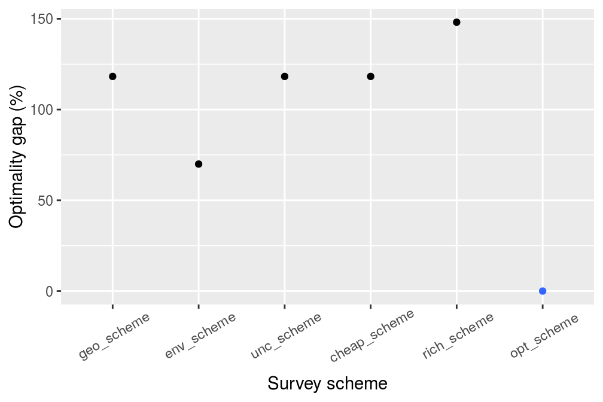
We can see that the optimal survey scheme has the highest return on investment of all the candidate survey schemes. To understand how sub-optimal the candidate survey schemes actually are, let’s compute their relative optimality and visualize them.
# express values in terms of optimality evd_survey_schemes$optimality <- ((max(evd_survey_schemes$roi) - evd_survey_schemes$roi) / max(evd_survey_schemes$roi)) * 100 # visualize relative optimality # zero = optimal, and increasing values indicate greater sub-optimality evd_survey_schemes %>% mutate(name = factor(name, levels = name), optimality = abs(optimality), is_best = optimality == min(optimality)) %>% ggplot(aes(x = name, y = optimality)) + geom_point(aes(fill = is_best, color = is_best)) + xlab("Survey scheme") + ylab("Optimality gap (%)") + scale_color_manual(values = c("TRUE" = "#3366FF", "FALSE" = "black")) + scale_fill_manual(values = c("TRUE" = "#3366FF", "FALSE" = "black")) + theme(axis.text.x = element_text(angle = 30, vjust = 0.65), legend.position = "none")
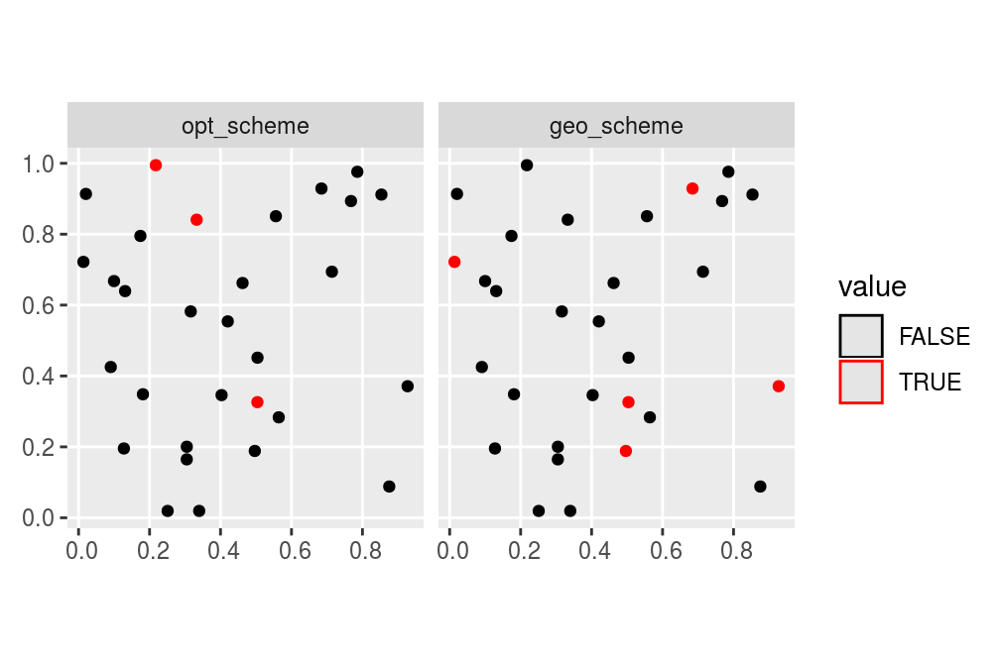
We can see that the optimal survey scheme performs much better than all the other survey schemes. This result shows that value of information analyses can potentially improve management decisions by strategically allocating funds to surveys and conservation management.